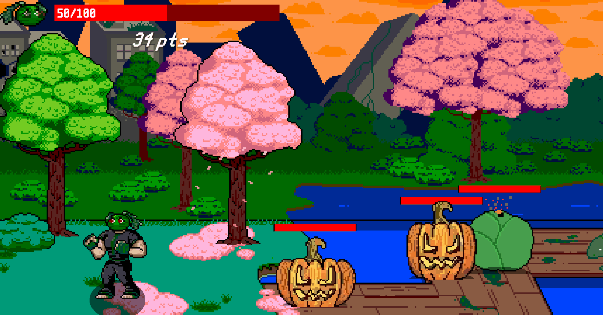
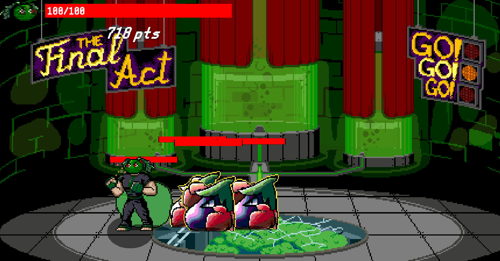

Title: Production Manager
Description: In an urban wasteland overrun with bountiful greenery, jungles, and woodlands, see who packs the biggest Fruit Punch! Play through 3 action packed levels and Team up with a friend to defeat the minions of the Phantomato of the Opera. In Spring 2024, I held the position of Mason's Analysis and Design Interest Group's Production Manager. During this production I held main responsibility over tracking our multidisciplinary team's progression of tasks which all contributed to the creation of the game. In this role, I coordinating with our admin tean as well as disclipine directors to ensure that our production stayed in scope and was budgeted for accordingly.
 